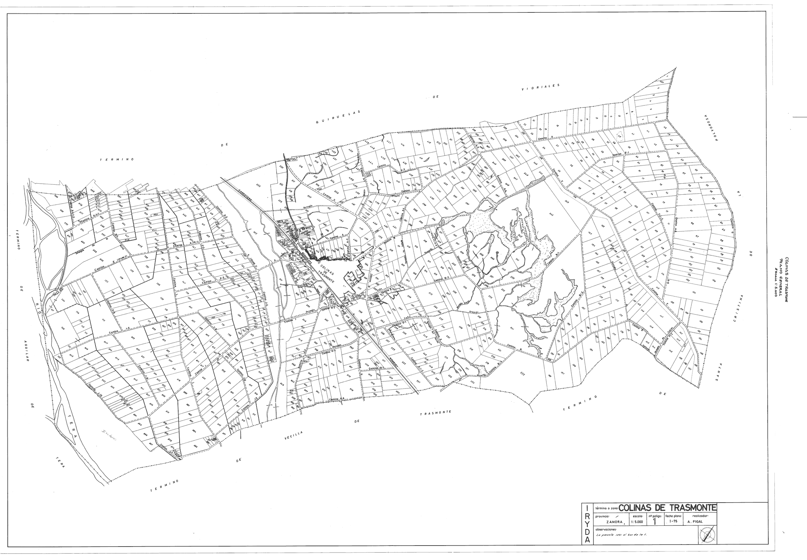
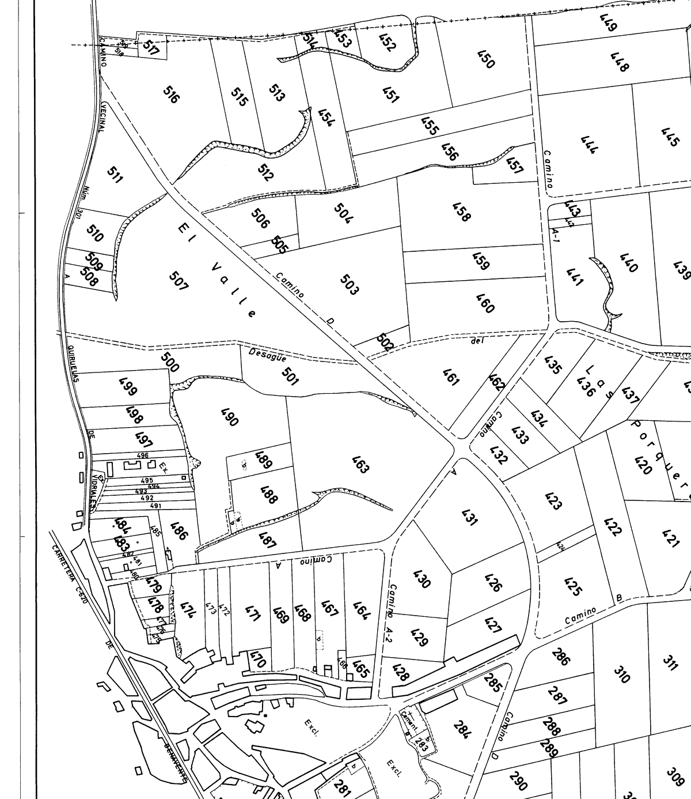
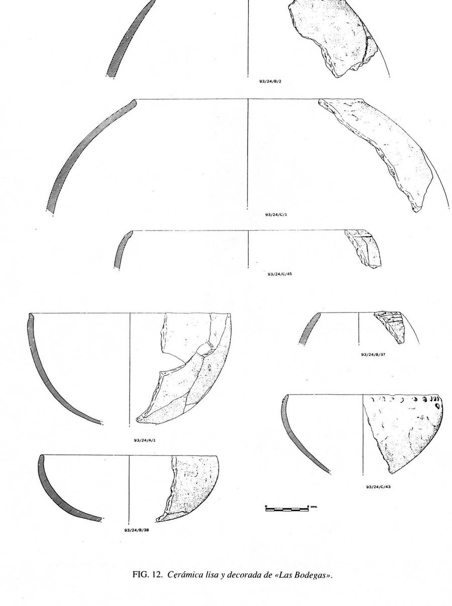
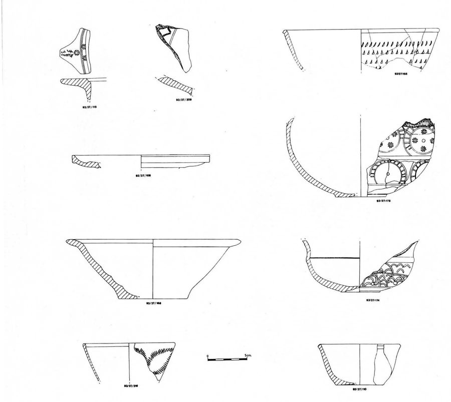
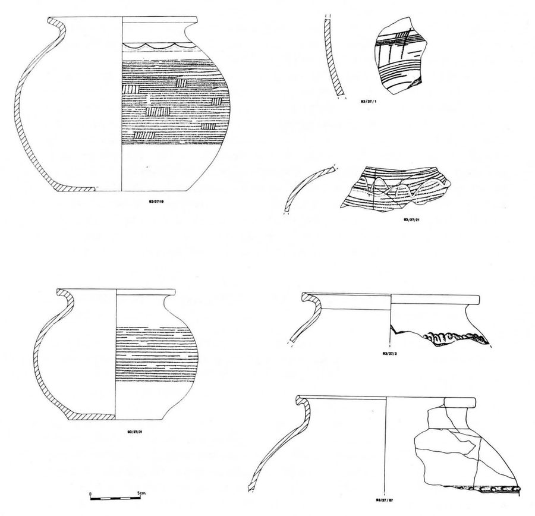

Colinas de Trasmonte
Bajo un pueblo que nunca tuvo escudo hay un monasterio del siglo X que el pueblo ha olvidado. Aquí va lo que dicen las fuentes, y de cada dato, cuánto está probado.
En diciembre de 1876 el alcalde de Colinas escribe al Gobernador Civil que el sello del ayuntamiento es «el único que existe y ha existido en este municipio». Ese sello lleva las armas de España. El pueblo no tuvo nunca emblema propio.
Novecientos años antes, en el pago que la tradición llama «el Convento de San Juan», había un monasterio dúplice, Castroferrol, que un documento de 1015 sitúa donde discurre el Tera «y de la otra parte el Almucera». Las zanjas del regadío lo sacaron a la luz en 1993. El nombre ya no lo recordaba nadie.
Ese mismo documento nombra a nueve personas que vivían allí el 22 de enero de 1015: Frater Joanis, Veila, Absub, Evite Monde, Muza, Gundisaluo, Hauiue, Nazarus y Amorum. Es la gente más antigua del término que conocemos por su nombre.
Y dos mil años antes que eso, al otro lado del pueblo, alguien cavaba silos en la Edad del Cobre, justo debajo de donde hoy están las bodegas.
Esta web reúne lo que el proyecto ha podido comprobar hasta septiembre de 2026. No todo está al mismo nivel de prueba, y la línea temporal lo dice en cada entrada.
Línea temporal
La escala está dibujada a proporción, así que los huecos son silencios reales de las fuentes. Lleva un corte para que quepa el yacimiento de la Edad del Cobre. Pulsa una marca para ir a su entrada, o filtra por grado de prueba.
El término
Así era el término en 1975, en el plano general de la concentración parcelaria: cada parcela numerada, los caminos, el Tera y el casco. Está dibujado con el sur a la izquierda, junto al río, y el norte a la derecha.

Los vecinos del término, en tres fuentes
Los cuatro vecinos de 1752 siguen ahí en 1847 y están rotulados, uno por uno, en los planos de 1975-77. Y los planos añaden un quinto que no nombra ninguna de las dos fuentes antiguas.
| Linde | Catastro 1752 | Madoz 1847 | Planos 1975-77 |
|---|---|---|---|
| Oeste | Quiruelas de Vidriales | Quiruelas de Vidriales | Quiruelas de Vidriales |
| Este | Vecilla de Trasmonte | Vecilla de Trasmonte | Vecilla de Trasmonte |
| Sur | Aguilar de Tera | Aguilar de Tera | Aguilar de Tera |
| Norte | Manganeses | Manganeses de la Polvorosa | Manganeses de la Polvorosa |
| Nordeste | — | — | Santa Cristina de la Polvorosa |
Por resolverPor qué el Catastro y Madoz sólo dan cuatro. Puede que enumerasen por puntos cardinales, que el contacto con Santa Cristina fuera entonces menor, o que el término cambiase entre medias.
En qué se usaba la tierra en 1752
Respuesta 10.ª del Catastro, en fanegas. Un tercio del término era monte: el paisaje no era un llano de cereal.
Una cuenta que no cuadra, y ya sabemos por quéLas 2.372 fanegas dan 796 ha, un 24 % menos que las 1.043 oficiales. La medida no falla: en el valle del Tera la fanega era de 300 estadales de cuatro varas, unos 3.354 m², y se contaba por heminas, un tercio de fanega. Lo que falla es la declaración: los peritos de 1752 midieron a ojo y se quedaron cortos.

Dónde está San Juan-El Valle
La excavación de 1993 lo situaba «al oeste del pueblo, camino de Quiruelas». El plano lo dice con su propio nombre: al oeste del casco, sobre las fincas 505 a 512, va escrito el paraje El Valle, y por su borde corre el camino de Quiruelas de Vidriales. Ahí estuvo el monasterio.
Los planos traen además los nombres de los pagos, que no están en Madoz ni en el Catastro: Vallondo, El Pendón, Las Tapias, Los Castilletes, La Encina, Los Llanos, Los Neguillos, Pescueza, Valancinas, Las Porqueras, La Regüera, El Caserío.
La cautelaLa excavación cita las parcelas 1.296 y 1.297, y esos números no existen en estos planos: la numeración del acuerdo acaba en 1021, una por cada finca resultante. Son de otra serie, seguramente las parcelas anteriores a la concentración. El paraje está probado; el número de parcela, no.
Dos cursos de agua, y el pueblo no está entre ellos
Madoz escribe en 1847 que el pueblo se sitúa «en una ladera con esposicion al S., por cuyo lado corre el arroyo llamado la Mucera». Medido sobre coordenadas, el Almucera pasa a 362 metros al sur-suroeste del casco. El dato de 1847 se sostiene.
El Tera, en cambio, queda a 2,1 kilómetros al suroeste. Miñano había escrito en 1826 que Colinas estaba «á la orilla del rio Tera», y no lo está: lo que llega al Tera es el término, donde el concejo tenía su molino.
Los dos cauces corren casi paralelos de oeste a este, separados por una franja de entre 1,6 y 3,2 kilómetros, y no se juntan hasta siete kilómetros aguas abajo del pueblo, ya fuera del término.
Una corrección que cambia dónde estaba el monasterioEl documento de 1015 sitúa Castroferrol «por donde discurre el riachuelo Tera y de la otra parte el Almucera». Este proyecto lo venía leyendo como «la confluencia». No lo es: es la franja de tierra entre ambos. Y eso encaja mejor, no peor: San Juan-El Valle, al oeste del pueblo sobre las terrazas del Tera, cae dentro de esa franja; el casco actual queda fuera, al norte de los dos cauces.
El nombre no está en ningún mapa oficial
El Nomenclátor Geográfico Básico de España, que es el catálogo oficial de topónimos del Estado, no registra «Castroferrol» en la provincia de Zamora. Tampoco «Pobladura de Trasmonte», el otro despoblado que Madoz situaba en el término.
Y hay algo más incómodo: tampoco registra ninguno de los pagos de Colinas —ni Vallondo, ni El Pendón, ni Los Castilletes, ni Las Porqueras, ni El Caserío—. La microtoponimia de este término no existe en la cartografía oficial.
Eso convierte los planos de la concentración parcelaria de 1975-77 en algo más que una fuente: hoy por hoy son la única. Si esos nombres no se transcriben de ahí, no están en ninguna parte.
Lo que sí hay, con cautelaLa cartografía colaborativa recoge 72 parajes con nombre en la zona, algunos coincidentes con los planos, y entre ellos «Los Linares», a 1.130 metros al oeste-suroeste. El lino aparece aquí en 1006, en 1752 y en 1847. Pero esos 72 parajes cubren 35 km² y el término sólo tiene 10,4: la mayoría son de los pueblos vecinos, y coincidir de nombre no prueba nada.
La gente
El pueblo alcanzó su máximo en 1950 y desde entonces no ha dejado de perder habitantes. Cuando se abrió la autovía, a finales de los noventa, llevaba ya cuarenta años de caída.
Ver los datos en tabla
| Año | Serie | Habitantes |
|---|
1842, un dato dudosoDe 132 a 386 habitantes en quince años no se llega creciendo. No fue un cambio de término: el INE no registra ninguno hasta 1972. Y el 132 no sólo es bajo para lo que viene después: es más bajo que los 156 que cuenta el censo de 1787 y que los 226 de Miñano en 1826. Está en el fondo de un hoyo, no al pie de una subida.
1970–2000, un hueco a propósitoColinas dejó de ser municipio en 1972. A partir de ahí las cifras son de la localidad, no del municipio, y unir las dos series fabricaría una caída que no existió.
Y el hoyo puede ser de las fuentes o del puebloPuede que Madoz y el recuento de 1842 beban de la misma matrícula defectuosa. Pero Madoz da su cifra «con sus despoblados», es decir contando de más, y en vecinos la caída es igual de clara: 55 en 1826, 33 en 1847, con la misma proporción de almas por vecino en ambas fuentes. Eso descarta que sea un problema de unidad de cuenta. Entre 1826 y 1842 caben la primera guerra carlista, el cólera de 1834 y la desamortización, y no hay dato para descartar una caída real. Queda abierto, y por los dos lados: de 132 en 1847 a 386 en 1857 hay un salto que tampoco explica ninguna natalidad.
Antes de los censos1752: 27 vecinos y 26 casas, diez de ellas inhabitables. 1826: 55 vecinos. 1847: 33 vecinos, 35 casas en 6 calles. Vecinos son familias, no personas: no van en el gráfico.
Materia para un emblema
Como Colinas nunca tuvo escudo, no hay nada que restaurar: cualquier emblema será el primero. Y el censo de 1787 añade de qué pueblo hablamos: un cura, dieciséis labradores, catorce jornaleros, y en la casilla de hidalgos, cero. Aquí no hubo linaje del que sacar armas. Estos son los colores que las fuentes permiten defender. Las muestras son orientativas; la paleta definitiva deberá sacarse de los objetos reales.
Azul lino
La flor del lino. 12 fanegas sembradas en 1752; «trigo y lino» en Madoz.
Verde encina
800 de 2.372 fanegas eran «monte de encinas vajas, robles y jaras».
Gris pizarra
La mampostería en seco de la sala del siglo XI excavada en 1993.
Rojo arcilla
El suelo de arcilla roja compactada de esa misma sala.
Sepia ferroso
El hierro de «Castro Ferrol» y la tinta del sello de 1876.
Pardo centeno
En 1752 se sembraban 418 fanegas de centeno y sólo 175 de trigo.



Y ya sabemos cómo se hace, porque aquí al lado se ha hecho
Bretocino tiene escudo y bandera desde 2005; Tábara, escudo desde 2001. Los firman los mismos historiadores que estudiaron Castroferrol, y publicaron íntegro el informe que acompañó a cada expediente. La proporción de esos informes dice casi todo: nueve páginas de historia por media página de blasón. El emblema no se argumenta, se gana.
De ahí sale la regla que este proyecto adopta: cada figura debe llevar su justificación escrita al lado —«alude a…»— y su fuente. Los fundamentos que esos trabajos aceptan son cinco: una cita documental literal, unas armas señoriales con fuente heráldica, la advocación de la parroquia, un oficio documentado y un rasgo natural del término. Nada inventado, ningún color por gusto.
Con un obstáculo que aquellos no tuvieronBretocino, Tábara y Benavente son municipios, y aprueban su escudo en pleno propio. Colinas dejó de ser municipio en 1972. La Diputación de Zamora y el ayuntamiento de Quiruelas la llaman «anejo» y «localidad», sin junta vecinal, así que lo más probable es que un emblema de Colinas no pueda ser oficial por sí mismo: o lo adopta el pleno de Quiruelas, o se queda en emblema vecinal. Falta comprobarlo en el Registro de Entidades Locales.
El santo del emblema: son cuatro, y en orden
El documento de 1006 dedica la iglesia del monasterio a San Salvador. El de 1015 dice que el lugar está «edificado en honor de San Miguel Arcángel y Santa María siempre virgen». Y la parroquia que quedó en pie es de San Juan Bautista. No son cuatro advocaciones peleándose: son cuatro nombres en fila, en mil años, en el mismo paraje.
Eso deja de ser un obstáculo y pasa a ser la idea: un lugar que ha cambiado de santo tres veces y ha olvidado los tres primeros. Lo único que el emblema no puede hacer es presentar a San Miguel como advocación única y perpetua, porque hubo cambio y está documentado.
Lo que falta
Lo que está abierto, y qué hace falta para cerrarlo.
- Cotejar los diplomas de Castroferrol
Ya tenemos el texto latino de los tres editados, pero por el apéndice de un artículo, no por las ediciones: seguimos leyéndolas por mano ajena. Y los de 1060, 1129 y 1170 siguen sin edición localizada. El más valioso sería el de 1129, porque es un deslinde.
- Los planos de procedencia
Numeran las 5.560 parcelas anteriores a la concentración, y son los únicos donde pueden estar las parcelas 1.296 y 1.297 que cita la excavación.
- Georreferenciar el plano
Superponerlo a la cartografía actual del IGN para dar coordenadas al paraje El Valle y al término entero.
- El archivo del ayuntamiento
El decreto de 1972 no dice qué fue de él. Ahí estarían los libros de actas del concejo. Vías: el Archivo Histórico Provincial de Zamora y el propio Ayuntamiento de Quiruelas.
- El agujero de 1842
El censo de 1787 cuenta 156 habitantes y Miñano 226 en 1826, pero el recuento de 1842 y Madoz dan 132 — y Madoz precisa que los cuenta «con sus despoblados». O la matrícula de 1842 está mal, o el pueblo perdió de verdad un tercio de su gente entre la guerra carlista y el cólera de 1834. Hay que ver de qué matrícula sale ese 132 y buscar los libros de difuntos del archivo diocesano de Astorga.
- Qué es Colinas administrativamente
Todo el procedimiento heráldico de la comarca supone un ayuntamiento con pleno. Colinas no lo tiene desde 1972, y las fuentes municipales la llaman «anejo» y «localidad», sin junta vecinal. Si no es entidad local menor, un escudo propio sólo puede ser oficial pasando por el pleno de Quiruelas. Se dirime en el Registro de Entidades Locales, y de ello depende todo el tercer pilar del proyecto.
- Dónde estuvo Pobladura de Trasmonte
Madoz dice en 1847 que en el término de Colinas hay dos despoblados: Castroferrol y Pobladura de Trasmonte. Un repertorio de 1992 sitúa Pobladura en otro sitio, entre Villanázar y Vecilla, y un apeo de 1706 parece darle la razón al tratar a Pobladura y a Colinas como dos vecinos distintos. Lo dirime un deslinde, no un diccionario.
- El pleito de 1600–1608 con Vecilla
Real Chancillería de Valladolid. Es la mejor fuente posible para el término antiguo, y hay que pedir la reproducción.
- Los libros parroquiales
En el Archivo Histórico Diocesano de Astorga, no en el de Zamora: la parroquia siempre fue de Astorga.
Versiones
Qué cambia de una versión a otra, y en qué fecha. Se lleva aquí a la vista mientras la web se está construyendo; cuando esté asentada, este apartado se ocultará y el registro seguirá en el repositorio.